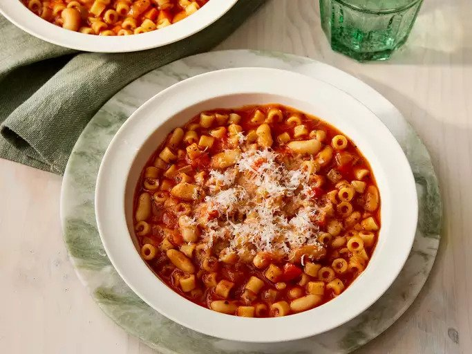

Pasta Fagioli

Description
Scrumptious Pasta Fagioli
Ingredients
- 1 tablespoon olive oil
- 1 carrot, diced
- 1 stalk celery, diced
- 1 thin slice onion, diced
- ½ teaspoon chopped garlic
- 4 (8 ounce) cans tomato sauce
- 1 (14 ounce) can chicken broth
- 1 tablespoon dried parsley
- ½ tablespoon dried basil leaves
- 1 ½ cups ditalini pasta
- 1 (15 ounce) can cannellini beans, drained and rinsed
- freshly ground black pepper to taste